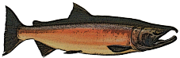
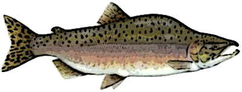

Chinook Salmon
Current population status and historical distribution of Chinook Salmon

Steelhead
Current population status and historical distribution of Steelhead

Coho Salmon
Current population status and historical distribution of Coho Salmon

Chum Salmon
Current population status and historical distribution of Chum Salmon

Pink Salmon
Current population status and historical distribution of Pink Salmon

Sockeye Salmon
Current population status and historical distribution of Sockeye Salmon

Quick Facts:
⚬ Also known as King Salmon.
⚬ Chinook are the largest Pacific Salmon. The largest ever recorded weighed 126 pounds.
⚬ Individuals over 30 pounds are known as Tyee Salmon.
Quick Facts:
⚬ Anadromous (ocean-going) version of rainbow trout.
⚬ Maximum size 40 pounds.
⚬ Unlike salmon, Steelhead, may survive spawning, and can therefore spawn more than once in their lifetime.
Quick Facts:
⚬ Maximum size 30 pounds.
⚬ Juvenile Coho are highly territorial.
⚬ Coho can be found in urban streams if water quality needs are met.
Quick Facts:
⚬ Also known as Dog Salmon due to canine-like teeth in spawning males.
⚬ Maximum size 30 pounds.
⚬ “Calico” coloration during spawning.
Quick Facts:
⚬ Also known as humpback salmon.
⚬ Maximum size 12 pounds.
⚬ Consistent two-year life cycle.
Quick Facts:
⚬ Sockeye are known as the most flavorful Pacific Salmon.
⚬ Maximum size 15 pounds.
⚬ Only spawn in lake-fed water systems.